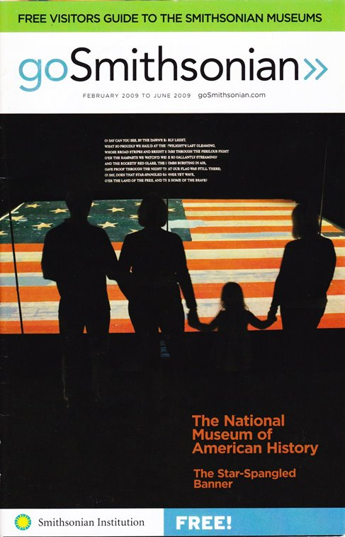
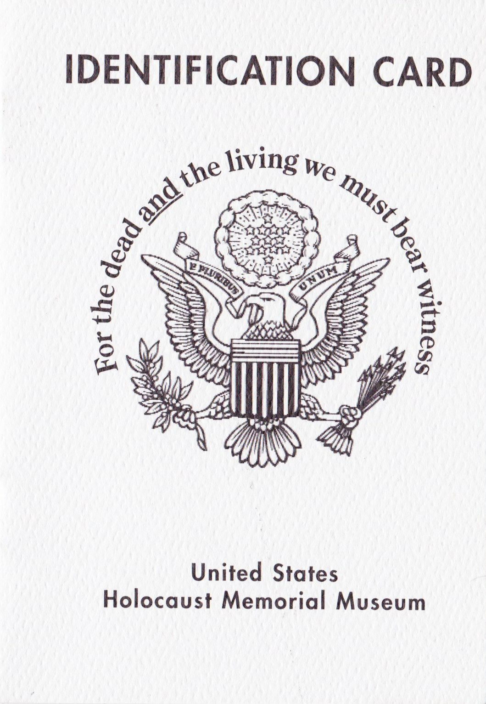
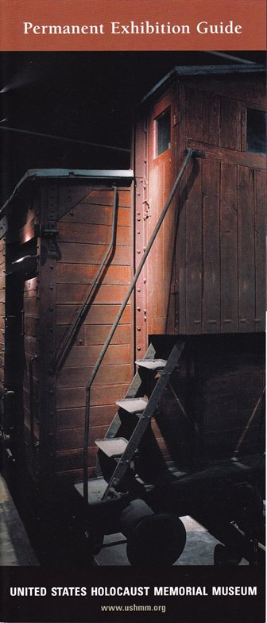
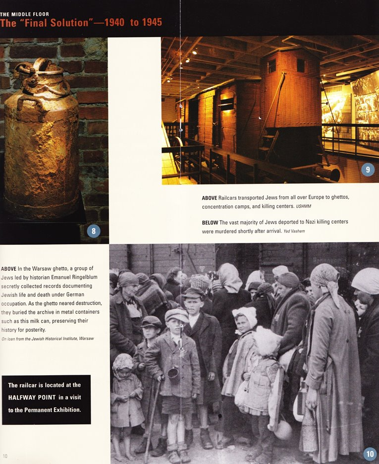
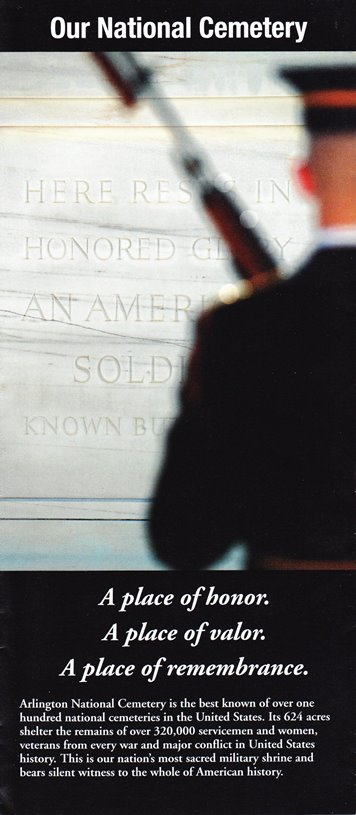

The National Mall
This is the centrepiece of the city and should be the main attraction for any trip to Washington. The Mall is a two mile green expanse that
stretches from the Potomac River to Capitol Hill and is home to DC’s most famous landmarks and museums. The Smithsonian museums that line
the mall (nine in total) are a must see, in particular The National Museum of American History, The National Museum of Natural History, and
The National Air and Space Museum. Admission to all Smithsonian museums is free.

Holocaust Memorial Museum
Although disturbing, this haunting memorial to victims of the holocaust is an essential visit. Upon entry, you are given an identity card of an actual
holocaust victim whose fate you follow throughout the museum. This personal trip through the artefacts is extremely solemn, so much so that the museum
recommends only those over 11 years old visit the main exhibit. Aside from the bleak exhibits the museum also details how this abhorrent situation came
to be with interesting historical details. Tickets are free, but are limited to four per person.



Arlington National Cemetery
Although in Virginia, Arlington National Cemetery is a short metro ride from the city (the metro is an excellent way to travel around the city, even
if you don’t plan on using it just peek below ground and gaze at the fantastic architecture, you will not be disappointed). The cemetery is the burial
ground for over 300,000 US soldiers, and notable Americans such as John and Robert Kennedy. This makes it an important shrine to cement national identity,
it is the nation’s pantheon. One of the most impressive sights is the changing of the guard every hour at the Tomb of the Unknowns.
